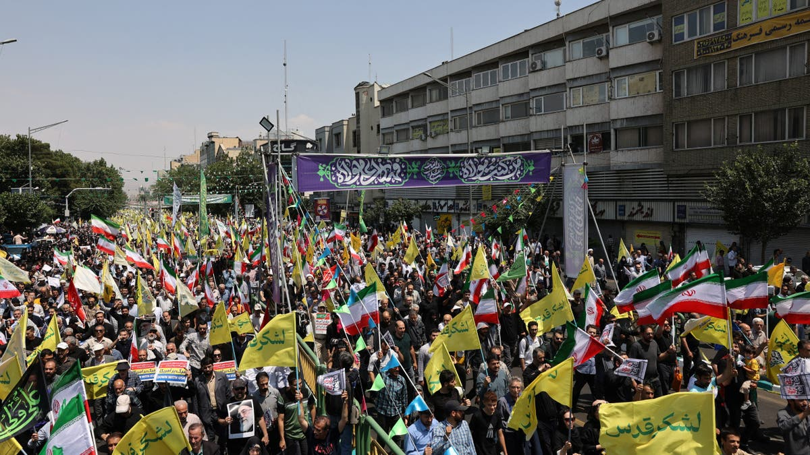
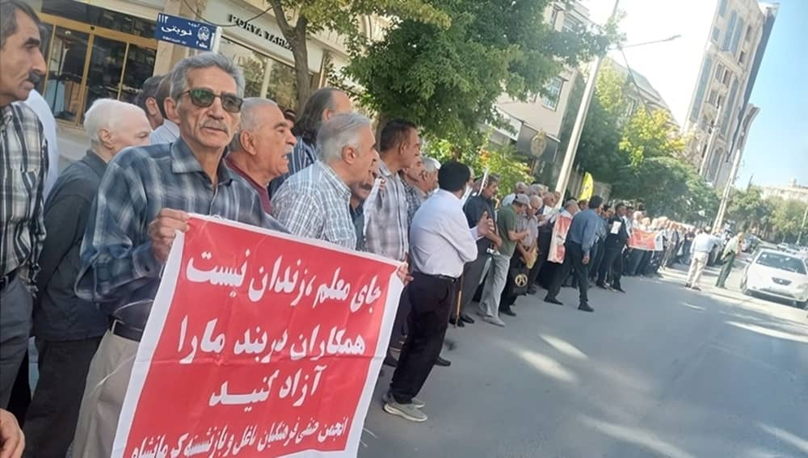

This is not a news report. this is a single day in the life of a student in Tehran built from the stories of real brave Iranians who risked their safety to speak and choose to stand for what they believe in.
Scroll to follow her day
A Note Before You Read
This story is addressed to you a student outside Iran. You attend class in a country where speaking up is a right, not a crime. That difference matters. The student you are about to follow call her Azar. SHE IS NOT REAL she is mix of real stories from, documented testimonies collected by NPR, the Associated Press, IranWire, and the Center for Human Rights in Iran. Her name is changed. Her experience is not.
Her university, Amirkabir University of Technology in Tehran, had the highest number of student detentions in the 2022 protests.
06:30
Morning — Before Class
She counts how much money she has before getting out of bed.
Iran's inflation rate reached 68.1% in Feburary 2026. For Azar that is a important number. It's the reason she skips breakfast three days a week. Dormitory meal prices have risen while food quality has fallen. She earns money tutoring younger students, but what she made last month won't cover rent and food both.
IranWire's report "No Water, No Power, No Security" shows universities in Shiraz, Tehran, and beyond where students have protested power outages, lack of heating, and unsafe conditions all while fees continue to rise. Azar's dorm loses electricity for three to four hours daily.
"I made the equivalent of only $40 in December, down from an already paltry $300–$400 average for the past year. When I found I could hardly afford cooking oil, it was the last straw."
Iranian woman, Karaj, speaking to the Associated Press on condition of anonymity · January 2026
68%Iran's point-to-point inflation · February 2026 · Statistical Center of Iran
09:00
Campus — Always being watched
She knows which classmates are informants.
The Basij Student Organization has units on every Iranian university campus. When the Ministry of Science ordered all universities to move online in September 2022 right as protests erupted everyone understood it wasn't about COVID. It was about controlling the gatherings and the protests.
On October 2, 2022 now known among Iranian students as "Sharif's Black Sunday" security forces entered Sharif University of Technology and fired airguns and paintball guns at students trapped in a courtyard. Videos went viral globally. The government called it a misunderstanding.

protests spread to around 150 cities and 143 universities across 31 Iranian provinces September–October 2022 Human rights archives
The Center for Human Rights in Iran showed that over 3,789 students were restrained between November 2022 and January 2023 suspended, expelled, forced to transfer, banned from dorms, or arrested. At Amirkabir alone, 157 students faced disciplinary committees and 119 were banned from campus completely.
"Universities are proving to be effective entities to facilitate organization. Outside universities, public spaces are not available to citizens and it is much harder to safely meet due to the extreme state violence."
Hadi Ghaemi, Executive Director Center for Human Rights in Iran The Iran Primer, November 2022
14:00
Afternoon self censorship
In her economics seminar, a student raises her hand and puts it back down.
The question she wanted to ask was about inflation and politics. She decided it wasn't worth the risk. Since 2022, criticizing government economic policy in a classroom has been treated as a political offense. Students have been summoned to disciplinary committees for comments made in academic settings. Students are scared to ask questions about their future.
The Amirkabir Newsletter a student publication that has documented campus activism for decades despite direct threats recorded 570 demonstrations across all Iranian universities in the fall of 2022 alone. That number tells you how widespread this was.
According to the Middle East Institute, around 40% of Iranian women aged 14–25 are unemployed and not in school. For those who reach university, graduation most likely doesnt lead to a career.
"We are facing a society that has tried many different ways without achieving results. There is a growing distance between the state and its citizens — declining trust, growing anger."
Hadi Ghaemi, Executive Director Center for Human Rights in Iran · Iran International, February 2026
57%Iranians experiencing malnourishment · Ministry of Social Welfare · 2024
23:30
Night When the Courtyard Fills
After dark, the real class begins.
IranWire documented what happened in dormitory courtyards across Iran during the 2022 uprising: students gathered at night, chanting, clapping, spreading recordings despite security forces at campus gates and internet blackouts.
At Jondishapur University of Medical Sciences, security forces raided female dormitories and detained several students. By morning, more students had gathered to protest the detentions. At Shahid Chamran University, students chanted: "A student may die but will not accept humiliation." That chant continues into 2026.

Retirees, workers, and students drew from the same well of desperation protests spread across economic and generational lines Kermanshah, Western Iran · NCR-Iran / 2025
"When you look at people in the street, it feels like you are seeing walking corpses people with no hope left to continue living. Everyone says they cannot sleep at night, stressed that at any moment they might come and attack our homes."
Iranian woman, Karaj, sending texts to a relative in Los Angeles during the crackdown Associated Press January 2026
On February 23, 2026, students at the University of Tehran held a memorial for a student killed in earlier demonstrations. Both students who spoke to the Associated Press did so on condition of them being anonymous, out of security concerns. That detail just to speak about a memorial tells you everything about what daily life is like for Azar.
"I might go out and get killed. But whatever happens, there is one thing I know for sure we have nowhere else to go. This is our home. And even if it can't happen for me, I want the generations after me to experience freedom."
Iranian content creator, Karaj NPR January 30, 2026
Workers & Students Rising Documentary Clip
The labor protests and economic collapse that preceded and ran alongside student-led demonstrations across Iran.
The Full Picture Featured Documentary
A broader look at Iran's protest movement, the students at its center, and the international response that followed.
Why Should I care?
Azar's story isn't finished. protests are still happening. Students are still being arrested. The internet is still being forced off by the goverment while the killings grow and grow in size. When the world watches, the cost of violence rises for the government. When the world looks away, students die in silence.
According to Iran International's analysis, "there are virtually no independent journalists on the ground in Iran. The diaspora becomes the bridge: sourcing, verifying, and sharing stories under dangerous and difficult conditions." This is not a fight on the ground this is a media war, a war against a silencing goverment that disregards livelyhood of its people
6,000+Estimated killed · 2025–26 protests · HRANA
50K+Reported detained since December 2025
3,789Students repressed in fall 2022 alone CHRI
143Universities that protested in 2022 All 31 provinces
What You Can Do
You are a student. So is she.
These are not vague calls to "raise awareness." here are some specific actions you can take this week that directly support Iranian students and the organizations documenting their stories.
ACTION 01
Support verified journalists
IranWire and Iran International are independently reporting despite the risks. Follow them share their reporting
HRANA and the Center for Human Rights in Iran document every thing every arrest,execution and student expelled. There work is dependant on small funding to build infrastructure the goverment cant destroy